Selected work — Experience design
Exploring how businesses can express identity, credibility and personality within the 1881 ecosystem.
01 — Overview
For many businesses, the first interaction with a potential customer happens online. Before a phone call is made, a message is sent or a purchase is considered, people evaluate trust through what they see on a screen. Images, descriptions, contact details and visual presentation all contribute to that first impression.
This ongoing project explores how design, accessibility and content quality can help businesses present themselves more clearly and effectively in digital environments.
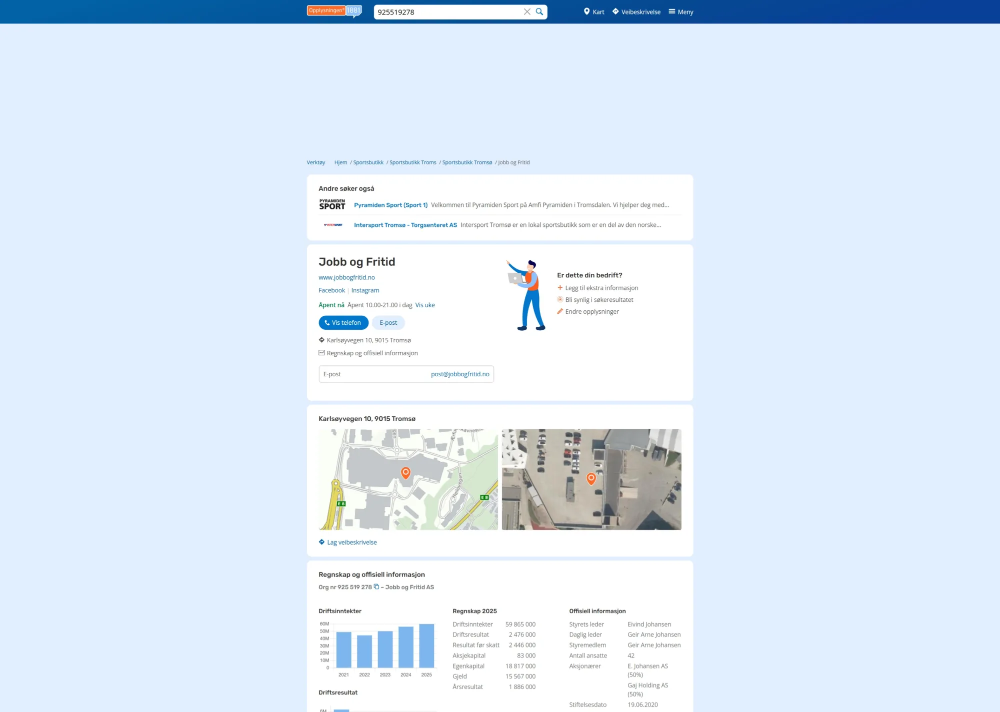
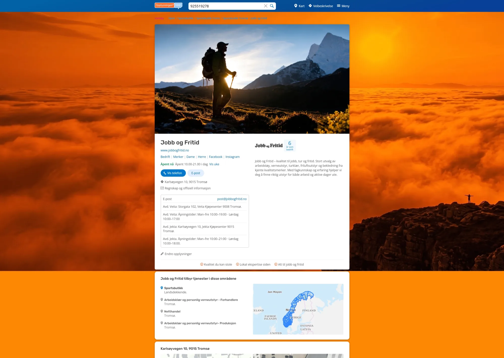
02 — The challenge
Some have professionally produced branding and photography, while others rely on self-created materials. As a result, the quality of digital business profiles can vary significantly.
Questions I found myself asking were:
The challenge was not simply visual consistency, but creating better experiences for both businesses and visitors.
03 — The storefront toolkit
Rather than designing unique experiences for individual businesses, the goal was to explore a scalable set of components that could help thousands of businesses express their identity.
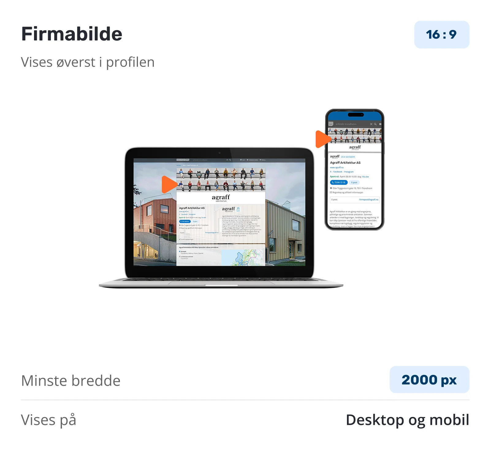
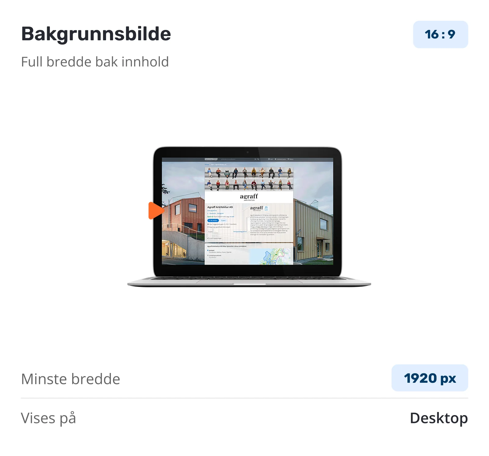
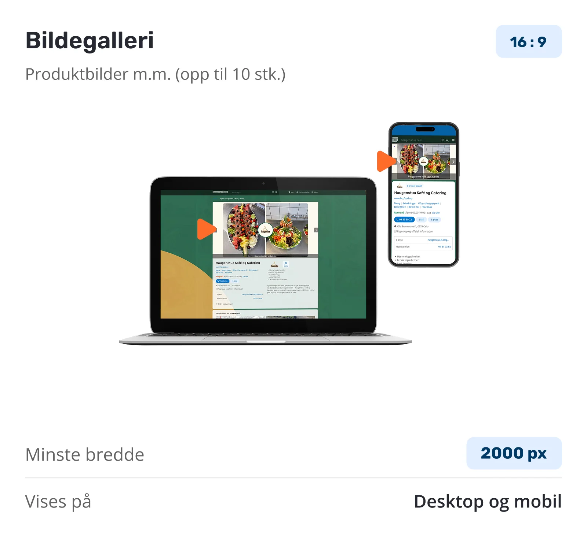
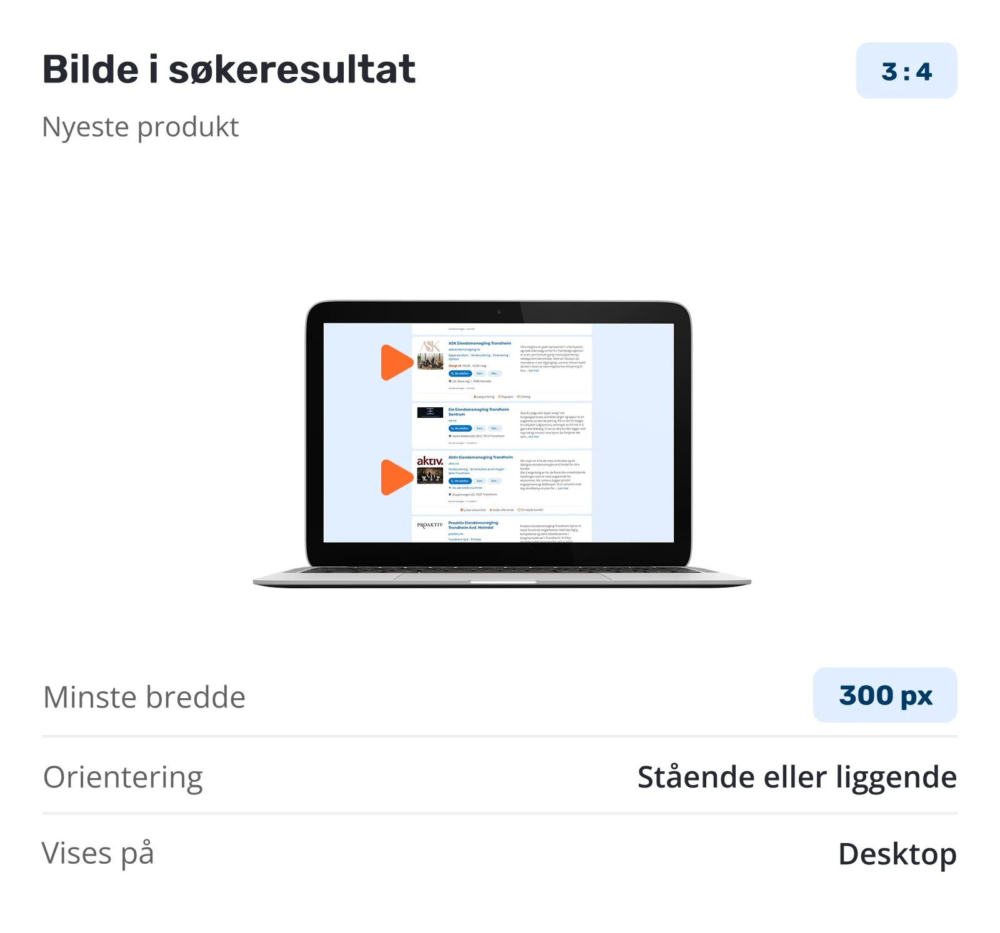
04 — From search to profile
Long before anyone opens a profile, they are scanning a list of results and deciding which name to trust. That list is the first storefront a business ever has.
Extending the identity components into the search result means a business is recognisable at the moment of choice — the logo, the imagery and the tone are already there, rather than waiting one click away.
05 — One framework, many identities
The challenge was not to create unique layouts for each business, but a flexible system capable of supporting a wide variety of industries and visual expressions.
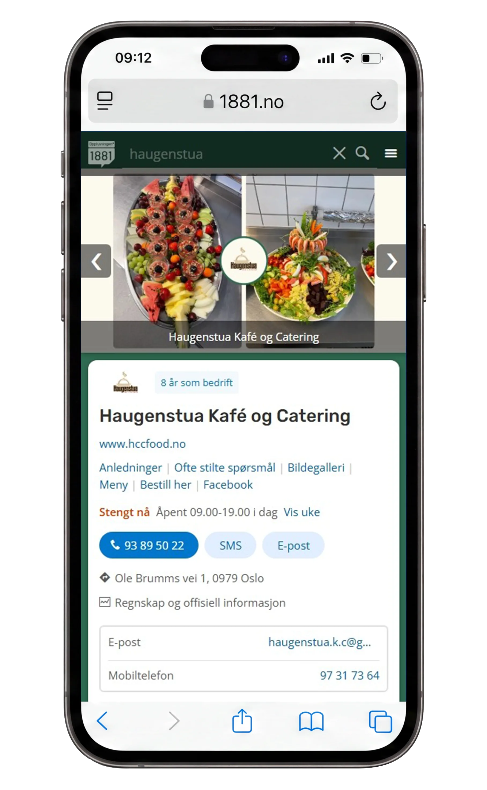
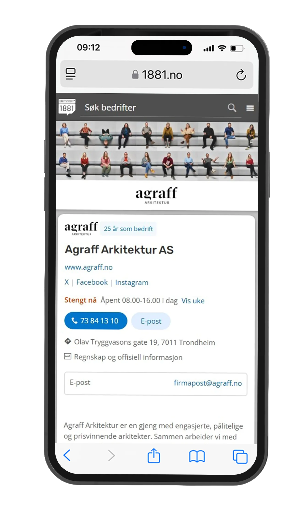
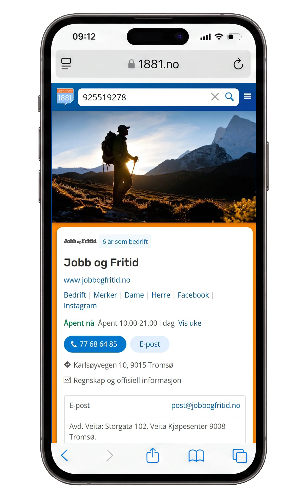
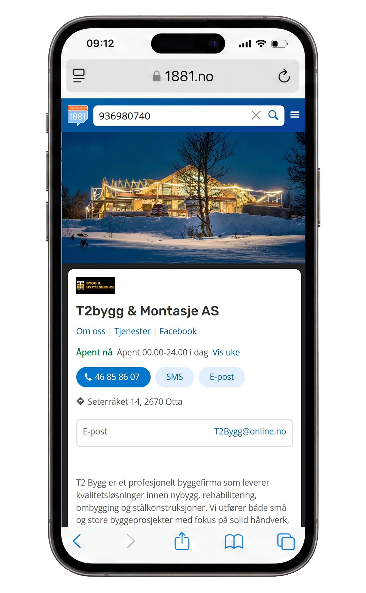
06 — Responsive experience
The same components have to hold together on a phone held at arm’s length and on a wide desktop screen. Imagery crops, contact actions stay within reach, and the identity survives the change of shape.
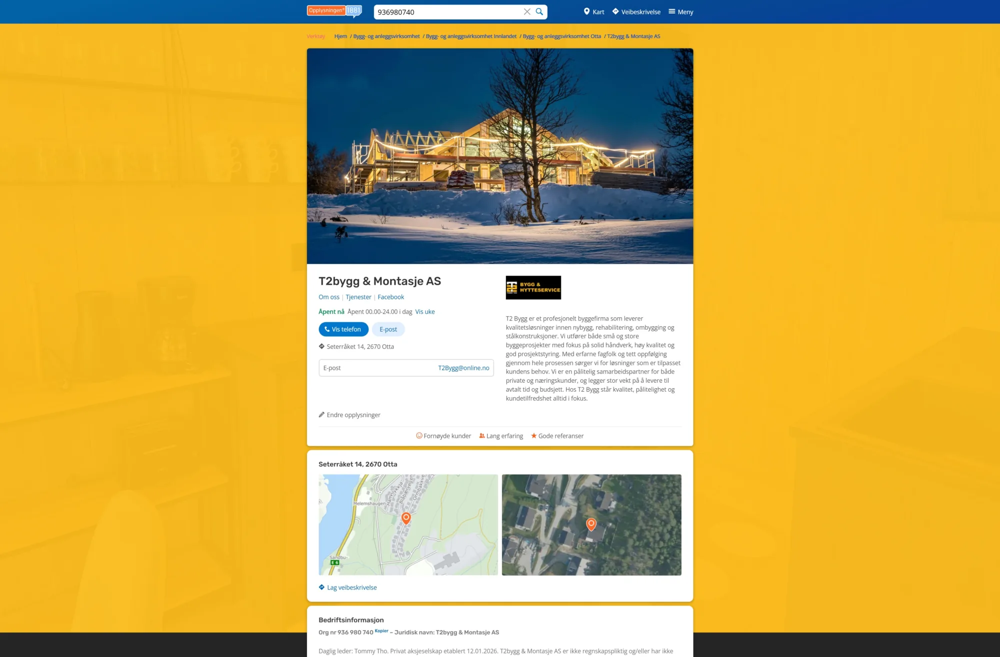
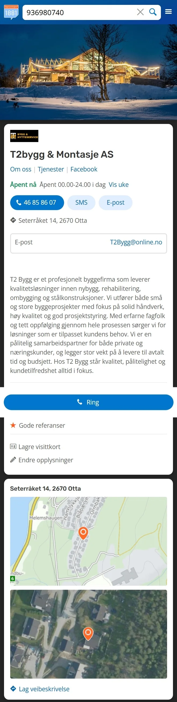
07 — Design principles
Users should quickly understand who the business is and what it offers.
Good design helps create confidence before direct contact is established.
Information should be easy to consume regardless of device or user needs.
Reducing unnecessary complexity improves comprehension.
A familiar structure helps users navigate more efficiently.
08 — Reflection
“People rarely notice good structure when it is there, but they quickly notice when it is missing.”
The project explored how business profiles could evolve from static information pages into recognizable digital storefronts.
By combining structured information with visual identity components, the concept aimed to help businesses communicate not only what they do, but who they are.
The work also highlighted an interesting balance between flexibility and consistency: allowing thousands of businesses to express themselves while maintaining a cohesive platform experience.